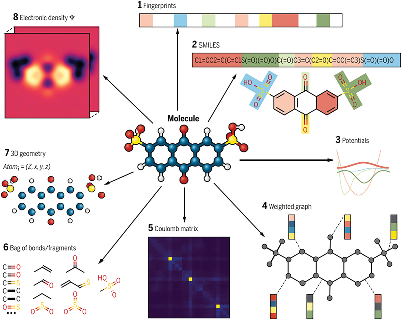

Como funcionam os descritores moleculares?
O processo de predição de genotoxicidade in vivo começa com a conversão das estruturas moleculares dos compostos químicos em vetores numéricos chamados descritores moleculares. Esses descritores capturam propriedades físico-químicas, topológicas e estruturais da molécula, permitindo que algoritmos de machine learning aprendam padrões associados à toxicidade.
Alguns dos descritores utilizados incluem:
- Peso molecular: massa total da molécula.
- TPSA (Área de Superfície Polar Topológica): relacionada à absorção e permeabilidade.
- nHBAs / nHBDs: número de aceitadores e doadores de ligações de hidrogênio.
- LogP: coeficiente de partição octanol/água, indicando hidrofobicidade.
- Índices de E-stado: propriedades eletrônicas e topológicas de cada átomo.
- Número de ligações rotacionáveis: flexibilidade estrutural.

Ao alimentar esses descritores em modelos como Random Forest ou LightGBM, é possível prever se a molécula analisada apresenta ou não potencial genotóxico, com base em padrões aprendidos a partir de dados experimentais.
Full Model Evaluation Metrics
| Model | Accuracy (mean) | Accuracy (std) | Balanced Acc. (mean) | Balanced Acc. (std) | ROC AUC (mean) | ROC AUC (std) | F1 Score (mean) | F1 Score (std) | Time (mean) | Time (std) |
|---|---|---|---|---|---|---|---|---|---|---|
| ExtraTreesClassifier | 0.80 | 0.02 | 0.77 | 0.02 | 0.77 | 0.02 | 0.80 | 0.02 | 0.83 | 0.16 |
| RandomForestClassifier | 0.80 | 0.02 | 0.76 | 0.02 | 0.76 | 0.02 | 0.79 | 0.02 | 1.35 | 0.18 |
| XGBClassifier | 0.79 | 0.03 | 0.77 | 0.03 | 0.77 | 0.03 | 0.79 | 0.03 | 2.14 | 0.87 |
| LGBMClassifier | 0.79 | 0.02 | 0.77 | 0.02 | 0.77 | 0.02 | 0.79 | 0.02 | 1.36 | 0.21 |
| NuSVC | 0.79 | 0.02 | 0.76 | 0.03 | 0.76 | 0.03 | 0.79 | 0.03 | 0.77 | 0.03 |
| KNeighborsClassifier | 0.79 | 0.02 | 0.76 | 0.02 | 0.76 | 0.02 | 0.79 | 0.02 | 0.07 | 0.02 |
| SVC | 0.78 | 0.02 | 0.74 | 0.03 | 0.74 | 0.03 | 0.77 | 0.03 | 0.75 | 0.10 |
| BaggingClassifier | 0.77 | 0.02 | 0.74 | 0.02 | 0.74 | 0.02 | 0.76 | 0.02 | 2.00 | 0.07 |
| RidgeClassifierCV | 0.77 | 0.03 | 0.74 | 0.03 | 0.74 | 0.03 | 0.76 | 0.03 | 0.37 | 0.21 |
| RidgeClassifier | 0.76 | 0.03 | 0.73 | 0.03 | 0.73 | 0.03 | 0.76 | 0.03 | 0.16 | 0.04 |
| LinearDiscriminantAnalysis | 0.76 | 0.03 | 0.73 | 0.03 | 0.73 | 0.03 | 0.75 | 0.03 | 0.27 | 0.01 |
| LinearSVC | 0.75 | 0.02 | 0.73 | 0.02 | 0.73 | 0.02 | 0.75 | 0.02 | 11.67 | 1.33 |
| LogisticRegression | 0.75 | 0.03 | 0.72 | 0.03 | 0.72 | 0.03 | 0.75 | 0.03 | 0.21 | 0.08 |
| LabelPropagation | 0.75 | 0.03 | 0.70 | 0.03 | 0.70 | 0.03 | 0.74 | 0.03 | 0.33 | 0.03 |
| LabelSpreading | 0.75 | 0.03 | 0.70 | 0.03 | 0.70 | 0.03 | 0.74 | 0.03 | 0.41 | 0.03 |
| DecisionTreeClassifier | 0.73 | 0.03 | 0.71 | 0.03 | 0.71 | 0.03 | 0.73 | 0.03 | 0.38 | 0.08 |
| ExtraTreeClassifier | 0.73 | 0.01 | 0.71 | 0.02 | 0.71 | 0.02 | 0.73 | 0.01 | 0.06 | 0.01 |
| CalibratedClassifierCV | 0.75 | 0.02 | 0.69 | 0.03 | 0.69 | 0.03 | 0.72 | 0.03 | 38.42 | 1.62 |
| AdaBoostClassifier | 0.73 | 0.02 | 0.69 | 0.02 | 0.69 | 0.02 | 0.72 | 0.02 | 1.74 | 0.20 |
| SGDClassifier | 0.72 | 0.03 | 0.70 | 0.03 | 0.70 | 0.03 | 0.72 | 0.03 | 0.22 | 0.03 |
| Perceptron | 0.69 | 0.04 | 0.67 | 0.04 | 0.67 | 0.04 | 0.69 | 0.04 | 0.11 | 0.02 |
| NearestCentroid | 0.67 | 0.04 | 0.67 | 0.04 | 0.67 | 0.04 | 0.68 | 0.04 | 0.08 | 0.02 |
| PassiveAggressiveClassifier | 0.67 | 0.04 | 0.65 | 0.04 | 0.65 | 0.04 | 0.67 | 0.04 | 0.11 | 0.02 |
| BernoulliNB | 0.65 | 0.03 | 0.64 | 0.03 | 0.64 | 0.03 | 0.65 | 0.03 | 0.08 | 0.02 |